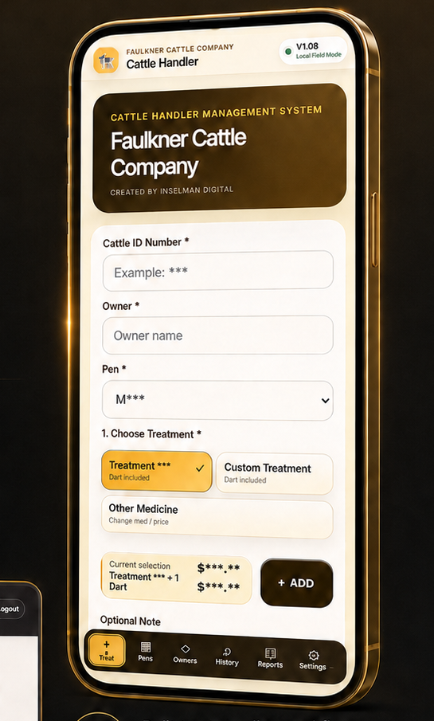

Built in Ardmore · Built for real work
Serious software.
Straight talk.
Custom software, internal tools, web apps and websites built around the way real businesses actually operate — from ranches and service companies to field operations and growing businesses.
Different tools.
Real results.
CarPET Friendly
Custom CRM and operations software for a growing local business.
Real operating softwareBusiness Websites
Professional, fast, mobile-first sites built to make a business look credible.
Learn more →R&D / Field Technology
Real-world innovation, research workflows and experimental field systems.
Learn more →Real tools · real results
Software built for the work that matters.
Cattle Handler is the flagship field platform, but Inselman Digital is broader than cattle. The same workflow-first approach is used for service businesses, internal operations, websites and custom systems.
Cattle Handler™
Treatments, pens, medicine tracking, reports, roles, health workflows and shared cloud data — built around a real cattle operation.

CarPET Friendly CRM
Customer lookup, scheduling, follow-ups, invoices and operational records built around the way the business actually runs.

What we build
Different industries. Same approach.
The niche is useful technology built close to the people doing the work. Sometimes that is a ranch. Sometimes it is a service company. Sometimes it is a completely different operation with a workflow that generic software does not fit.
Custom Software
CRM, operations, dashboards, reporting, inventory, records and cloud workflows.
Internal Tools
Simple screens and automation that remove repetitive work instead of adding complexity.
Business Websites
Professional customer-facing sites with strong mobile performance and clear paths to action.
Field Tech & R&D
Research-oriented systems, sensor workflows and software that connects to the physical world.
Founder-led · built different
I build for business owners because I am one.
Inselman Digital grew from solving real operating problems in my own businesses, then applying the same approach to other operations that needed software built closer to the work.
No sales handoff, no layers, and no pretending complexity is sophistication. The goal is sharp software that earns its place in the workday.
Ardmore, Oklahoma
The process
Simple on the surface.
Powerful results.
Start with the real problem, learn the workflow, build around the user, and let real use show what needs to improve.
1. Talk
Learn the operation and goals.
2. Build
Custom solutions around the workflow.
3. Launch
Get it into real use quickly.
4. Grow
Refine, expand and keep improving.
Ready to build something that works?
Tell me what part of your business should work better.
You do not need a technical specification. Tell me what you run, where the friction is, and what you wish the software would do.